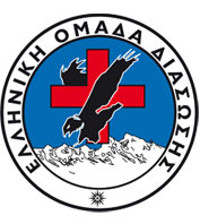
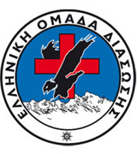
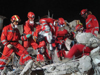

Γενικά
Γενικά
Η συνεχής εκπαίδευση και η συμμετοχή σε σεμινάρια είναι αυτά που βοηθούν όλα τα μέλη της ομάδας να αποκτήσουν τις απαραίτητες γνώσεις και δεξιότητες, για τη συμμετοχή τους στις δράσεις της ομάδας.
Η Ε.Ο.Δ. ενημερώνεται συνεχώς για τις εξελίξεις που αφορούν τους τομείς δράσης της και για το λόγο αυτό παρακολουθεί εκπαιδεύσεις και συνέδρια σε εθνικό και διεθνές επίπεδο. Όλα τα μέλη της εκπαιδεύονται τόσο σε θεωρητικό επίπεδο όσο και σε πρακτικό.
Γενικά
111 Πτέρυγα Μάχης στην Νέα Αγχίαλο

Καρλόβασι Σάμου
Καρλόβασι Σάμου
